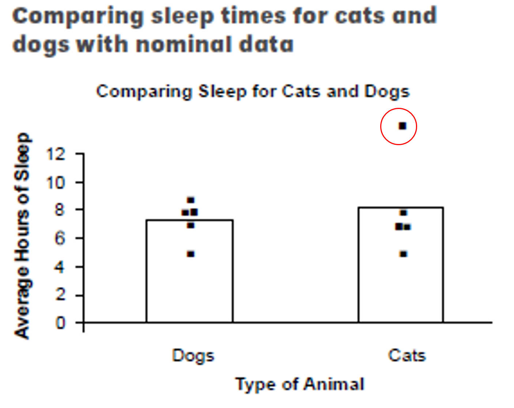
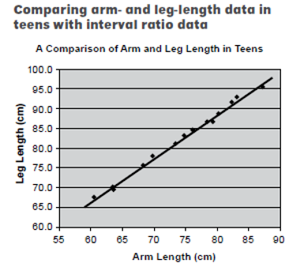
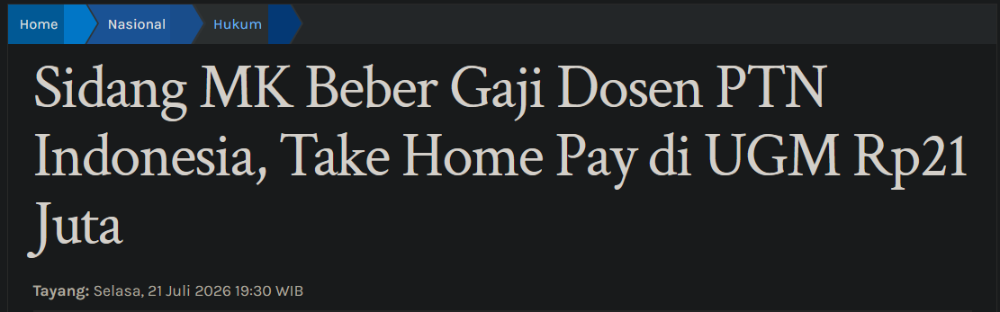
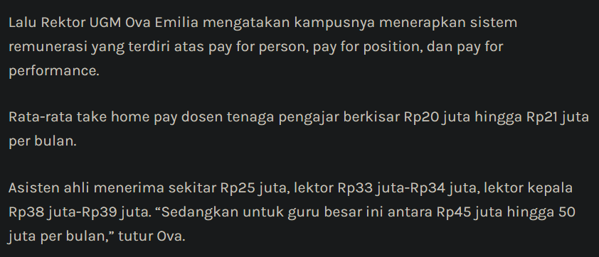
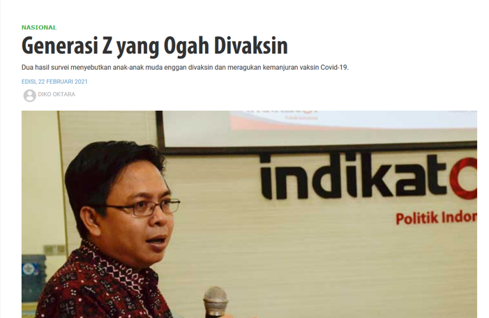
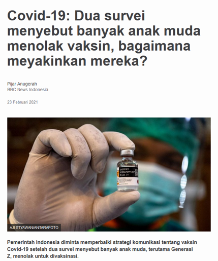
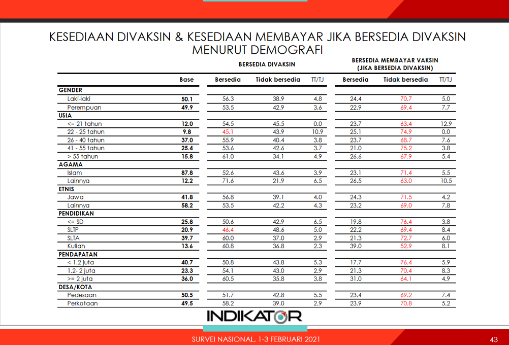
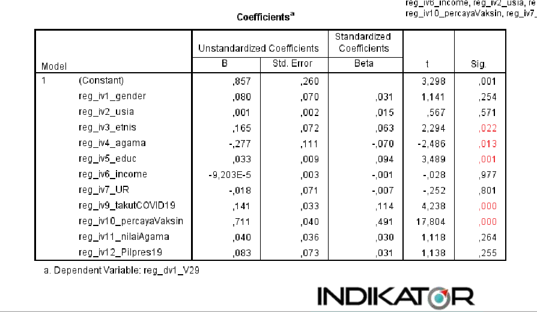

Literasi Data dan Penulisan Ilmiah
2026-09-24
Setelah data dianalisis (Pertemuan 5), temuan pentingnya harus dikomunikasikan. Cara Anda mengomunikasikannya sangat bergantung pada siapa audiensnya:
Anda perlu memperhatikan norma/kelaziman yang berlaku di komunitas Anda.
Tiap bidang punya gayanya sendiri: Kedokteran → AMA, Sosiologi → ASA, Teknik → IEEE, Psikologi → APA.
Dengan sejawat serumpun, Anda diperbolehkan (bahkan didorong) memakai istilah teknis, sehingga jargon justru menambah akurasi dalam proses komunikasi.
Ingat: statistik pada dasarnya bicara soal probabilitas, jadi hindari diksi yang menyiratkan realitas yang serba pasti/rigid.
Definisi
Hedging language adalah gaya bahasa yang dipakai ilmuwan untuk mengekspresikan kehati-hatian ketika mendiskusikan ketidakpastian dalam menginterpretasi data. Interpretasi harus diartikulasikan dengan tone yang hati-hati.
Kata kunci yang sering dipakai: “cenderung,” “mengindikasikan,” “kemungkinan,” “pada sampel ini,” “perlu diuji lebih lanjut.”

Pada grafik terlihat kucing rata-rata tidur lebih lama daripada anjing. Namun, ada satu kucing dalam sampel yang tidur jauh lebih lama daripada yang lain dan memengaruhi rerata kelompoknya. Sangat mungkin sebenarnya hanya ada sedikit perbedaan rerata durasi tidur antara kucing dan anjing, sehingga pengambilan data ulang dengan sampel yang lebih besar diperlukan untuk memastikan apakah perbedaan itu memang ada.
Kalimat ini secara eksplisit mengaitkan ketidakpastian dengan satu nilai ekstrem (outlier) dalam sampel, bukan sekadar berkata “hasilnya tidak pasti” tanpa alasan yang jelas.

Grafik menunjukkan hubungan yang sangat kuat antara panjang lengan dan tungkai pada remaja. Semua partisipan mendekati garis tren, tanpa nilai ekstrem.
Di sini hubungannya memang kuat dan jelas. Hedging yang berlebihan justru tidak tepat. Kuncinya bukan selalu membingkai temuan dengan keragu-raguan, tapi selalu sesuaikan tingkat kepastian narasi Anda dengan kekuatan bukti yang Anda temukan.




Sebuah lembaga survei mewawancarai 1.200 partisipan secara acak melalui telepon tentang kesediaan vaksinasi. Dari 1.200 partisipan, sekitar 118 orang (9.8%) berusia 22–25 tahun.
Klaim yang dipublikasikan media: hanya 45.1% partisipan usia 22–25 tahun bersedia divaksinasi, yang merupakan proporsi terendah di antara semua kelompok usia. Kesimpulan yang menjadi headline media: generasi muda (Gen Z) banyak menolak vaksinasi.


Generalisasi tergesa-gesa dari subkelompok (hasty generalization)
Menyimpulkan pola populasi dari satu subkelompok kecil yang estimasinya kurang presisi, tanpa mengecek apakah pola itu bertahan saat seluruh kelompok dilibatkan, adalah bentuk penyalahgunaan statistik yang, sayangnya, cukup sering terjadi.
Moral of the story: selalu cek kesesuaian antara klaim dan data. Kalau sebuah klaim terasa too good to be true (atau too alarming to be true), ini adalah indikasi bahwa Anda perlu memeriksa datanya lebih teliti.
Kembali ke kasus survei vaksinasi: peneliti hanya melaporkan point estimate (45.1%) dengan margin of error 2.9%.
Sebelum
“Hanya 45.1% partisipan berusia 22–25 tahun bersedia divaksinasi.”
Sesudah
“Dari sekitar 120 partisipan usia 22–25 tahun, hanya 45.1% yang bersedia divaksinasi (interval kepercayaan 95%: 42.2–48.0%). Jika survei ini diulang berkali-kali, sekitar 95% dari interval yang dihasilkan akan mencakup persentase populasi yang sebenarnya. Meski begitu, dalam analisis regresi yang mengontrol variabel lain, usia tidak berkaitan secara signifikan dengan kesediaan vaksinasi, sehingga belum ada bukti kuat bahwa kelompok usia ini benar-benar berbeda.”
Masalahnya
Margin of error ±2.9% ini sebenarnya angka topline untuk seluruh sampel (n=1.200), untuk subkelompok usia 22–25 tahun (n≈120) margin of error-nya jauh lebih lebar (kira-kira ±9%). Inilah kesalahan pelaporan yang umum terjadi: memakai MoE survei keseluruhan untuk subkelompok yang jauh lebih kecil.
Seharusnya > “Dari sekitar 120 partisipan usia 22–25 tahun, hanya 45.1% yang bersedia divaksinasi (interval kepercayaan 95%: 36.1–54.1%). Jika survei ini diulang berkali-kali, sekitar 95% dari interval yang dihasilkan akan mencakup persentase populasi yang sebenarnya. Interval selebar ini masih tumpang tindih dengan interval kelompok usia lain (mis. usia ≤ 21 tahun: 54.5%; 26–40 tahun: 55.9%), sehingga belum ada bukti kuat bahwa kelompok usia ini benar-benar berbeda.”
Definisi
Mengulik analisis dengan mencoba berbagai kombinasi variabel, metode, atau ambang batas, sampai ditemukan hasil yang signifikan secara statistik (p < ,05), lalu hanya melaporkan hasil yang signifikan saja (Simmons et al., 2011).
Contoh bentuknya:
Hypothesizing After the Results are Known
Menyajikan temuan yang sebenarnya ditemukan secara eksploratif (setelah melihat data) seolah-olah itu adalah hipotesis yang sudah dirumuskan sejak awal, sebelum data dikumpulkan (Kerr, 1998).
Ingat analysis plan dari Pertemuan 5? Salah satu fungsinya mencegah HARKing. Dengan mencatat hipotesis dan rencana analisis sebelum melihat hasilnya, Anda punya jejak yang jelas: mana yang confirmatory (diuji sesuai rencana) dan mana yang exploratory (ditemukan di tengah jalan).
Penting diingat
Bandingkan dengan yang akan kita pelajari di Pertemuan 12: post hoc theorizing memang dibolehkan dalam narrative review yang mensintesis puluhan studi (Baumeister & Leary, 1997). Yang tidak boleh adalah menyamarkan eksplorasi sebagai konfirmasi dalam satu studi empiris tunggal.
Perhatikan
Baca skenario berikut: “Seorang peneliti awalnya menguji apakah skor Neuroticism berkorelasi dengan usia. Hasilnya tidak signifikan. Peneliti lalu mencoba mengorelasikan usia dengan keempat trait lainnya satu per satu, dan menemukan korelasi signifikan dengan Openness. Dalam naskahnya, peneliti menulis: ‘Kami menghipotesiskan bahwa usia berkaitan dengan Openness, dan hipotesis ini terbukti.’”
Ada pertanyaan?
Paparan disusun dengan menggunakan dan Quarto dengan template dari UNAIR Theme.